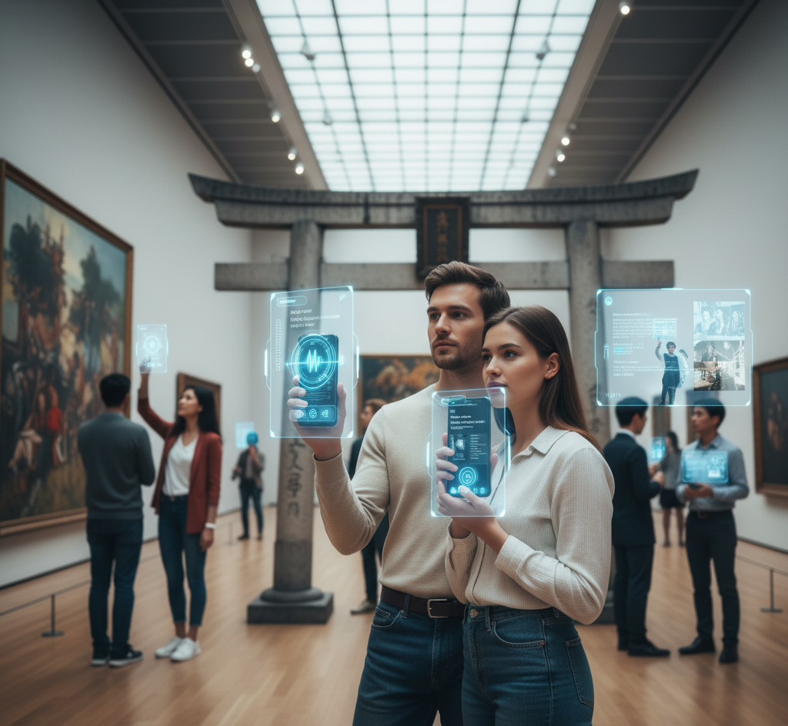
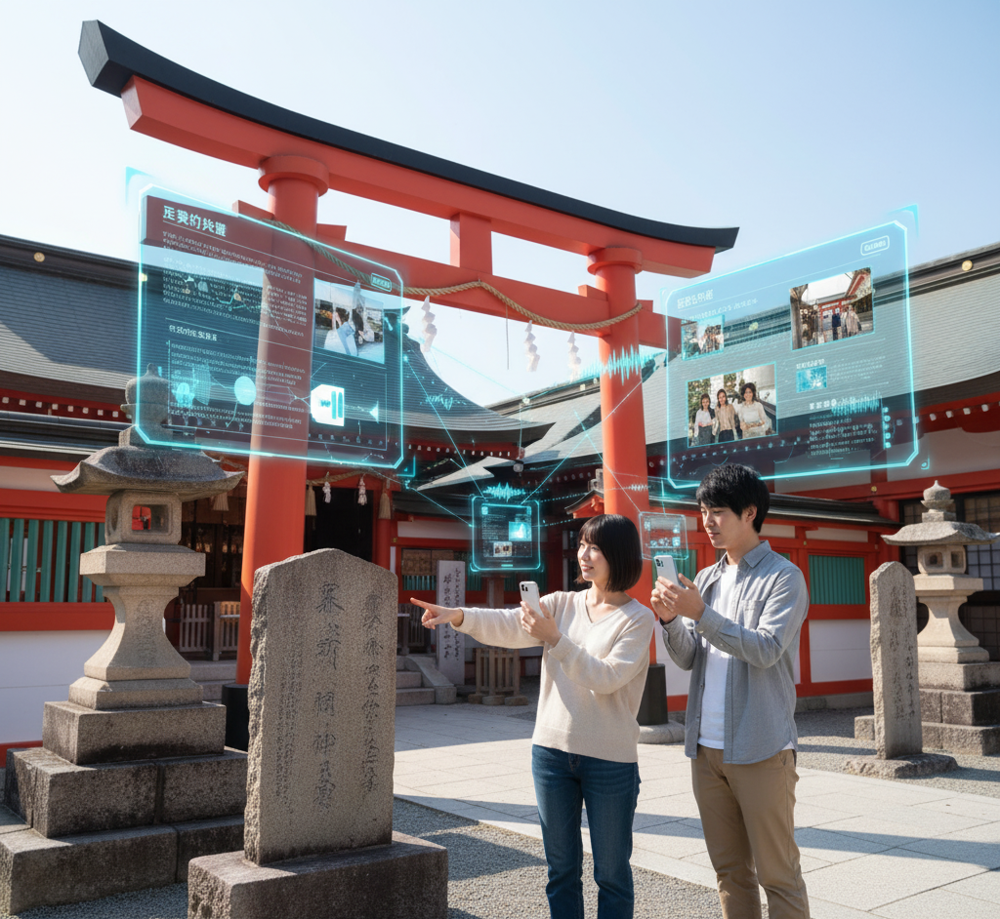

空間が語りだす。
AR音声ナビゲーション
スマートフォンをかざすだけ。
事前に登録された場所やモノの情報を、的確な音声でご案内します。
このシステムの主な特徴
高精度な空間・画像認識
事前に学習させた特定の画像や空間を、スマートフォンが正確に認識。対象に紐づけられた専用の音声ガイドを再生します。
柔軟なコンテンツ登録
場所やモノごとに、再生したい独自の音声ファイルを自由に設定可能。多言語対応や専門的な解説など、目的に合わせた案内を実現します。
シームレスな音声体験
利用者は対象にかざすだけ。複雑な操作なしで、必要な情報を必要な場所で瞬時に音声で受け取ることができます。
想定される利用シーン

美術館・博物館
事前に登録した展示作品にカメラをかざすと、作者の意図や制作秘話など、作品ごとの詳細な解説を再生します。

観光地・史跡
特定の建造物や看板を認識させ、その場限定の歴史的背景や、通常は聞けない詳細な解説を音声で提供します。
施設・イベント会場
特定のエリア（空間）に入ると、その場所に関連する案内や誘導音声を自動で再生。工場見学やイベントでの活用に最適です。